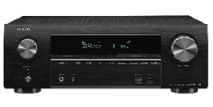

L'amplificateur home-cinéma bénéficie d'une alimentation solide qui permet de produire jusqu'à 80 watts en stéréo et jusqu'à 140 watts en crête (par canal). Ainsi, il convient aux enceintes compactes ou colonne (avec une configuration de 5.1, 5.2.2 ou 7.2 canaux) qu'il est capable d'alimenter sans la moindre difficulté. Sa conception soignée vous permet de profiter d'effets verticaux.
Il dispose des derniers systèmes de décodage audio. Il est capable de prendre en charge les formats audio multicanaux les plus nouveaux, comme le DTS:X, le Dolby Atmos ou le Dolby Digital Plus Atmos. Bien sûr, il prend également en charge les formats plus anciens, tels que le DTS HD Master ou le Dolby TrueHD. Capable de décoder tous les flux audio, cet ampli home-cinéma vous permet de regarder DVD, Blu-Ray, émission TV ou Netflix en toute liberté. L'amplificateur intègre de nombreux DSP d'ambiance, dont le Dolby Surround, le DTS Neural:X et le Dolby Height Virtualization qui permettent de répartir un flux stéréo de manière efficace sur plusieurs enceintes (même sept) et d'exploiter des enceintes Atmos. Il vous assure ainsi une excellente immersion sonore, même pour des films anciens, tournés en stéréo.